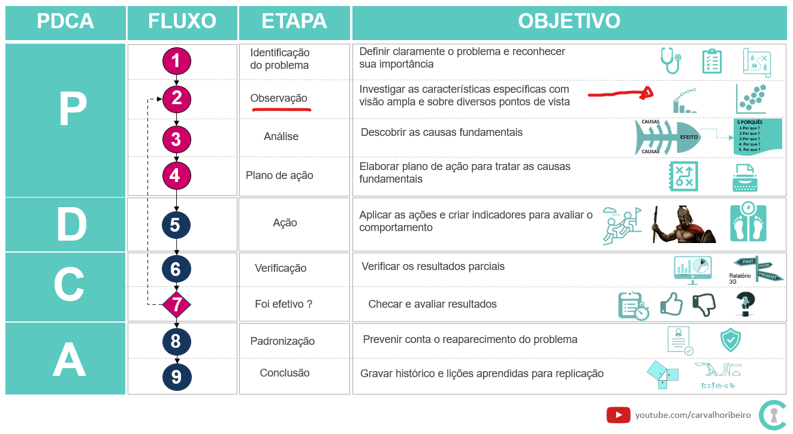

Padrões são fenômenos que se repetem de forma regular com base em alguma regra ou em condições definidas.
Padrões nos permite fazer comparações e com isso deu origem a descobertas e invenções as quais são resultados da habilidade humanda de reconhecer padrões.
Reconhecer padrões requer repetição da experiência, e compreender os padrões é um dos fundamentos do pensamento matemático e resolução de problemas.
Exemplo de padrões - número, som, imagem, cores, plantas, linguagem.
Tabuleta de barro micenica de 1200 antes de Cristo com informações sobre a distrubição de couro bovino, suíno e veado aos sapateiros - PY Ub 1318
Qual o objetivo
Permitir que possamos fazer previsões e ou explicar melhor o fenômeno.
Encontrar dados relevantes para que consigamos replicar esses fenomenos para construir coisas que melhorem e simplifiquem nossa vida
De onde vem a demanda
Da necessidade de investigar as características com visão ampla sobre diversos pontos de vista PDCA.
No exemplo utilizado a)Quem eram as vítimas ?b)Em que período ele as intoxicava ?c)Em qual período de tempo ?

PDCA - Etapa 2
Como fazer
Para reproduzir os códigos abaixo serão necessários os pacotes tidyverse , ggExtra e janitor